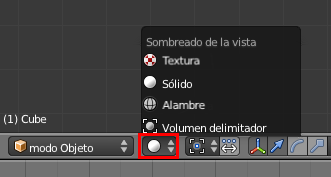

Sombreado
Nos hemos acostumbrado a ver los objetos representados en el monitor con sensación volumétrica; incluso cuando añadimos colores estos se hacen patentes en Vista 3D. Pero hay otros modos de sombreado y que resumimos en este apartado. El tipo de sombreado se escoge justo al lado del Centro de pivotaje. En esta ocasión el icono por defecto es una gran bola blanca.
- Sólido. Es la opción por defecto y en la que se trabaja la mayor parte del tiempo. Obedece a un tipo de iluminación denominada OpenGL por la cual los objetos siempre se nos muestran iluminados frontalmente. Esto hace que el trabajo sea agradable sacrificando la coherencia del claroscuro según las lámparas de la escena. No es recomendable editar esta iluminación pero si nos apetece jugar un rato vamos a Archivo/Preferencias de usuario y en la sección Sistema apagamos alguna luz o cambiamos colores.
- Alambre. Sólo nos muestra la geometría que conforma el objeto. No dejamos pasar la ocasión de presentar a Suzanne, mascota de Blender, que se encuentra en Añadir/Malla/Mono. Por norma general los software 3D incorporan un objeto más o menos complejo para que podamos hacer pruebas sin tener que invertir tiempo en modelar nosotros mismos.

- Volumen delimitador. Este concepto ya ha aparecido al hablar del Centro de pivotaje. A veces los objetos tienen miles de caras y eso les hace ser muy pesados para ser movidos con fluidez dependiendo de las capacidades de nuestro ordenador.
- Textura. Por un lado se mostrarán algunas de las texturas que hayamos añadido a los objetos aunque aún no sabemos hacerlo; y por otro se sacrifica la comodidad del OpenGL para que las lámparas de la escena iluminen realmente. Es muy importante cuando hacemos videojuegos y simulaciones porque esa será la iluminación final.